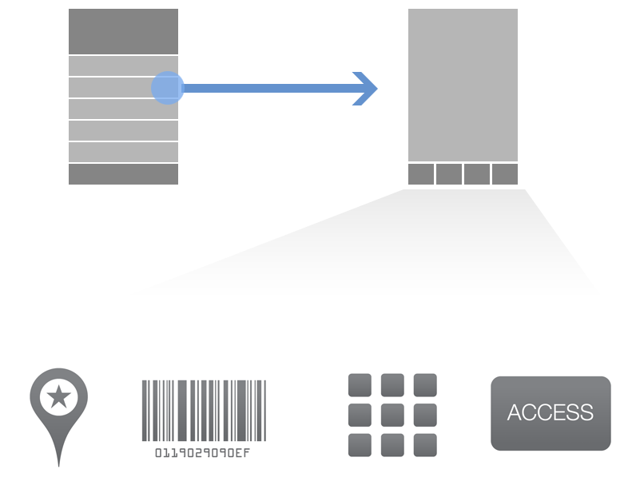

I'm Matthew Lyles
And this is my Shiba Baxter :)
"Choose a job you love, and you will never have to work a day in your life."
1993 - 2014
The Problem

From chaos
build a consistant and familiar
experience
THE END
buh-bye